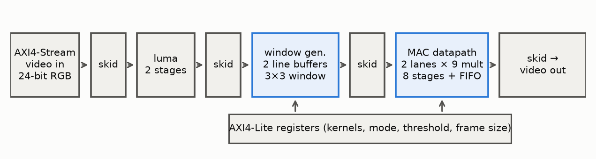
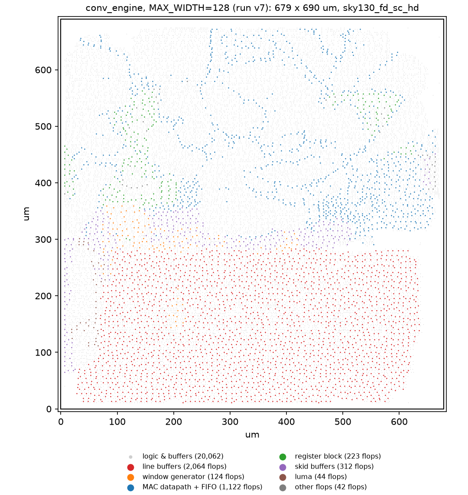
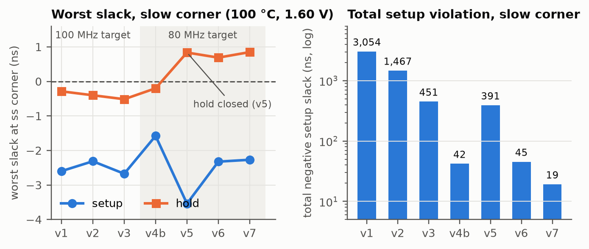
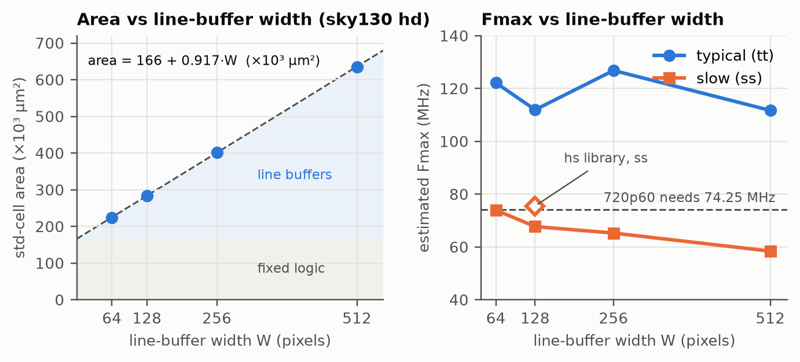

Design, verification, FPGA implementation and an open-source ASIC flow with a power-performance-area study
Abstract. I designed a programmable 3×3 image-convolution engine for real-time video in Verilog, with AXI4-Stream video ports and an AXI4-Lite control interface. It supports blur, sharpen, Laplacian, Sobel edge magnitude and thresholded edge maps. It is verified against a bit-exact Python model (1.89 million output pixels compared, including two full 720p frames), with unbounded formal proofs of the skid-buffer, AXI4-Lite and window-generator protocols, 100% line/branch/expression/toggle coverage, and 14 injected bugs, all caught. The same RTL meets 150 MHz on a Zynq-7020 FPGA. Taken through the open-source LibreLane flow on SkyWater sky130, it produces a 0.47 mm² layout with zero DRC and LVS errors. Closing timing there took seven runs and three RTL changes. A sweep of the line-buffer width shows flip-flop line buffers would take 88% of the area at 720p, which quantifies why a production version would use SRAM.
Image filters are a natural first accelerator: the arithmetic is simple, but streaming them at one pixel per clock forces the real hardware questions. Data arrives row by row, yet each output pixel needs the rows above and below it. The pipeline must also survive backpressure from downstream logic without dropping or duplicating a pixel. I started from an FPGA HDMI pipeline whose only custom block was a 15-line grayscale converter. That block had two latent bugs (pixels lost under backpressure, and a swapped colour channel), which showed me how little "it synthesises" says about correctness. This project is my attempt to do one block properly, from specification to silicon layout.

conv_engine. Every block-to-block link is AXI4-Stream, with a skid buffer at each boundary. Configuration is latched at the start of each frame, so software can reprogram the filter without tearing.Window generator. Two line buffers hold the previous two rows. For each incoming pixel at column c, the generator reads column c from both buffers, forms a 3-pixel column, and shifts it into a 3×3 window. Out-of-frame neighbours are replicated from the nearest edge pixel. Because output (r, c) needs input (r+1, c+1), the block runs one line plus one pixel behind its input. It inserts flush cycles at each line and frame end, costing (W+1)(H+1) cycles per frame instead of W·H (+0.2% at 720p).
Datapath. Two independent kernel lanes each multiply nine unsigned 8-bit pixels by signed 8-bit coefficients into a 20-bit accumulator, then apply a rounded arithmetic shift. A combine stage outputs lane 0, |lane 0| or |lane 0| + |lane 1| (the L1 gradient magnitude for Sobel), saturates to 0–255 and optionally thresholds. A fixed-point analysis on real images, done before writing RTL, showed at most 0.5 LSB error against floating point (PSNR 59 dB). Sobel's only deviation comes from the deliberate L1-for-L2 approximation (≤41% on diagonal edges).
Flow control. The datapath is a free-running eight-stage pipeline with a 16-entry output FIFO and credit-based admission. A window is accepted only while a FIFO slot is guaranteed, so the pipeline never needs a stall signal. This replaced an earlier design in which one shared clock enable drove about 650 flip-flops; §5 explains why.
| Method | Scope | Result |
|---|---|---|
| Golden model | Integer Python model with the RTL's exact widths, rounding and saturation | 14 unit tests |
| Simulation (cocotb) | 32 tests over 5 testbenches; random backpressure; real images; 2048-wide and 4095-line frames; two 1280×720 frames | All pass on Icarus and Verilator; 1.89 M pixels bit-exact |
| Formal (SymbiYosys) | Skid buffer data integrity; AXI4-Lite protocol; window-generator handshakes and framing; window contents | Unbounded proofs (k-induction, IC3/PDR); window contents bounded to 24 cycles |
| Coverage (Verilator) | All 8 RTL modules, merged across testbenches | 100% line, branch, expression, toggle (82 waivers, each justified) |
| Mutation testing | 14 deliberately injected bugs | All caught |
Two results shaped how I now write testbenches. First, one injected bug (write data taken from the live bus when AXI's W channel arrives before AW) initially passed every simulation test, because my test master politely left old data on the bus; both bus drivers now scramble their wires when idle. Second, coverage exposed two error-recovery paths that no test had exercised (a frame starting with an invalid configuration, and a start-of-frame arriving mid-frame).
Out-of-context synthesis and place and route on the PYNQ-Z2's xc7z020-1 meets 150 MHz with +0.81 ns slack. The design uses 898 LUTs, 1,012 flip-flops, one 36 Kb block RAM (both line buffers, up to 2048 pixels wide) and 18 DSP48 slices, about 2% of the device. Integration exposed a path no block-level run had measured (a combinational RGB-to-luma conversion between blocks), which was fixed by pipelining it.
The same RTL (line-buffer width 128) was hardened as a macro with LibreLane 3.0.16 on sky130A using the sky130_fd_sc_hd library. The 80 MHz clock target comes from the requirement: 720p60 needs 74.25 MHz.
| Metric | Result | Metric | Result |
|---|---|---|---|
| Die / std-cell area | 0.468 mm² / 0.283 mm² | DRC (Magic, KLayout) / LVS | 0 / 0 / 0 |
| Cells / flip-flops | 30,342 / 3,931 | Hold, all corners | met |
| Setup @ 80 MHz, typical | +3.57 ns (Fmax ≈ 112 MHz) | Setup @ 80 MHz, slow (100 °C, 1.6 V) | −2.27 ns (≈ 68 MHz) |
| Power (typical, 80 MHz) | 28 mW | LibreLane sky130 sign-off | passes |

Timing closure took seven runs (Figure 3). Each run exposed the next bottleneck:
Three of the fixes were RTL changes: local skid buffers, precomputed counter flags, and the credit-based datapath. All three were re-verified with the full simulation, formal and coverage suites, and they also improved the FPGA build. The main lesson: a shared clock enable is free on an FPGA, where every flip-flop has a CE pin, but costs a high-fanout net and a mux per flop in standard cells.


Line buffers dominate. Std-cell area ≈ 166,200 µm² + 917 µm² per pixel of width, which is about 57 µm² per stored bit once each bit's flip-flop, write and read multiplexing and buffering are included. Power ≈ 15.7 mW + 0.10 mW per pixel. Extrapolated, flip-flop line buffers would be 88% of the area at 720p (1,280 pixels) and 92% at 2,048, where the FPGA spends a single block RAM. Using the dimensions of sky130's OpenRAM macros, two 1 KB SRAMs break even with flip-flops at about 440 pixels of width (cell area) or about 220 (die area). At 720p, two 2 KB macros would need 0.57 mm² against about 1.2 mm² of flip-flop cells.
Cell library. Switching to the high-speed sky130_fd_sc_hs library raises the slow-corner Fmax from 68 to 75 MHz, enough for 720p60 even on slow silicon at 100 °C, at the cost of +33% area and 2.2× power (62.7 mW).
Here the 28 nm FPGA is faster than the 130 nm standard-cell implementation: 150 MHz against 112 MHz typical and 68 MHz worst case. Its hard blocks (BRAM, DSP48, per-flop clock enables) are exactly the structures this design relies on. The ASIC's advantages would come from SRAM line buffers and a newer node. The exercise made concrete how architecture choices that are free on one target carry real cost on another.
A single block taken from specification through verification to an FPGA and a sky130 layout taught me more than a broader but shallower design would have. The hardest parts were not the RTL itself but proving it correct, and then learning why a design that met 150 MHz on an FPGA needed three architectural changes to approach 80 MHz in standard cells. I am now most interested in the trade-offs between architecture and energy efficiency that the PPA study only began to expose.
Tools: Icarus Verilog 12, Verilator 5.040, cocotb 2.1, Yosys 0.52, SymbiYosys, Z3, ABC, Vivado 2023.2, LibreLane 3.0.16 (OpenROAD, Magic, KLayout, Netgen), sky130A. Specification, verification and ASIC details: docs/spec.md, docs/verification.md, docs/asic.md in the repository.